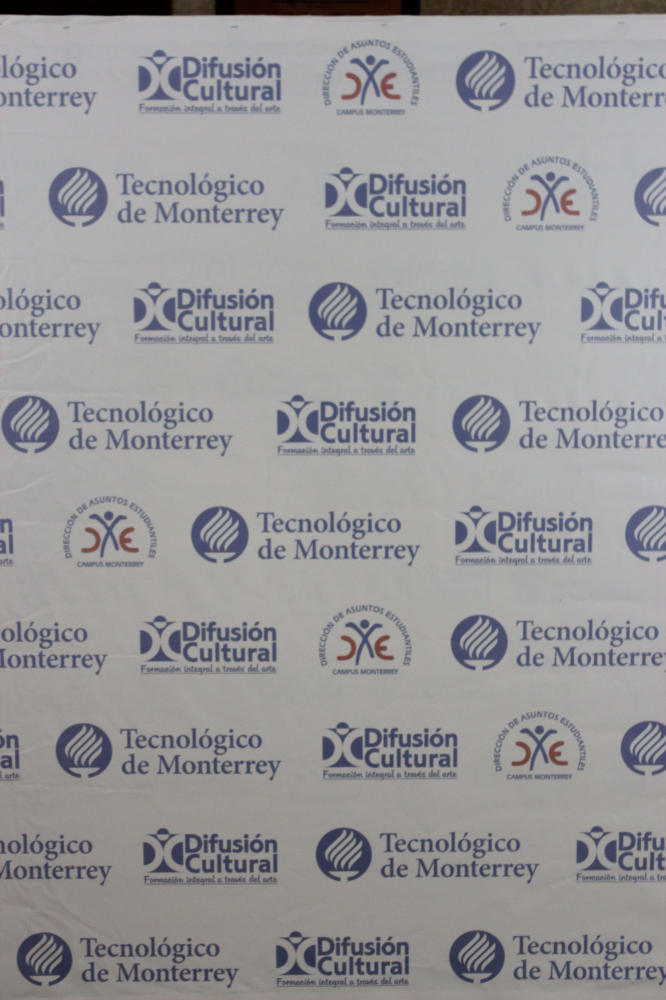

Carlos Velázquez. (Pintura y Técnica de pastel 3D)
Participó como estudiante en la Escuela Nacional de Artes Plásticas (Antigua Academia de San Carlos) de la Universidad Nacional Autónoma de México, en las áreas de Pintura y Grabado. A lo largo de su vida profesional ha participado en más de cuarenta exposiciones colectivas en lugares como el Museo Metropolitano de Monterrey, Casa de la Cultura de Monterrey, Auditorio San Pedro en Garza García, N.L. Así mismo, cuenta con más de catorce exposiciones individuales en el Palacio de Gobierno de Monterrey, en Barcelona, España, en la Galería Jean Jacques Fiorina en Celigny, Suiza, entre otros lugares.
Edgar Segovia. (Fotografía digital experimental).
Realizó la Maestría en Artes, Especialidad Estudios Visuales 2011, la Licenciatura en Lenguajes Audiovisuales, Especialidad en Fotografía 2006. Sus áreas de Interés son la Docencia en Artes y Humanidades, Comunicación y Producción Artística, en lo Administrativo, gestión de asuntos escolares y/o producción audiovisual. Como parte de su experiencia profesional, se ha desempeñado como docente en el Nivel Medio Superior (UANL, 2012), participado en el Foro de Asuntos Estudiantiles (UANL, ITESM, 2012). En lo Administrativo como Coordinación De Difusión Cultural, Preparatoria #2 UANL, (2006-2014). A fin de especializarse ha tomado los siguientes Cursos: Auditoria y Procesos de Calidad Norma ISO 9000-2008. TUV. 2009; Creación de la Malla Curricular en el Nivel Superior (UANL, 2009); II Simposio de Estudios Visuales (CONARTE, UANL 2008).
Luis Fernando Gameros. (Arte Urbano/Graffiti)
es un artista visual egresado de la carrera de Diseño Gráfico de la Universidad Metropolitana de Monterrey, ha participado en eventos como el Forum internacional de las culturas en Monterrey, el festival urbano Callegenera, así como ha participado en festivales en Puebla, Querétaro y Distrito Federal, actualmente participa en diversos proyectos de la mano de diseñadores gráficos y otros artistas urbanos.
Jorge Flores. (Acuarela y Escultura en cerámica)
Durante 15 años trabajó en el campo aeroportuario en la Cd. de México, posteriormente regresó a la ciudad de Monterrey donde trabaja de manera independiente ejerciendo su profesión desde hace 10 años. Con una formación basada en diversos talleres y asumiendo un carácter autodidacta, se introduce en el medio artístico como Escultor, tiempo en el cual ha participado en más de treinta exposiciones colectivas y una individual en la Casa de la Cultura de San Pedro Garza García N.L. Ha ejecutado diversos proyectos de Escultura Monumental para nuevos Desarrollos Habitacionales y actualmente se desempeña como maestro en los Talleres de Arte de la Unidad Cultural Abasolo de la U.A.N.L. y en Artes Visuales del Departamento de Difusión Cultural del I.T.E.S.M., Campus Monterrey.